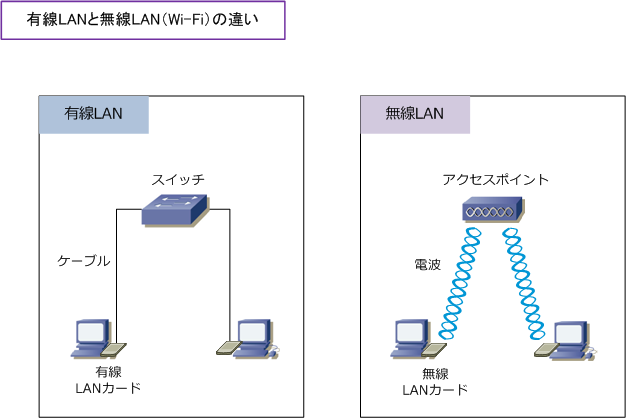
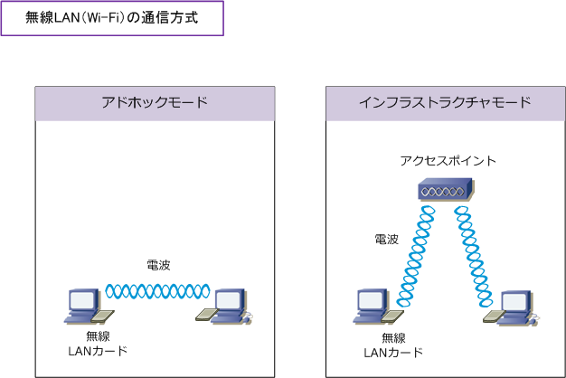
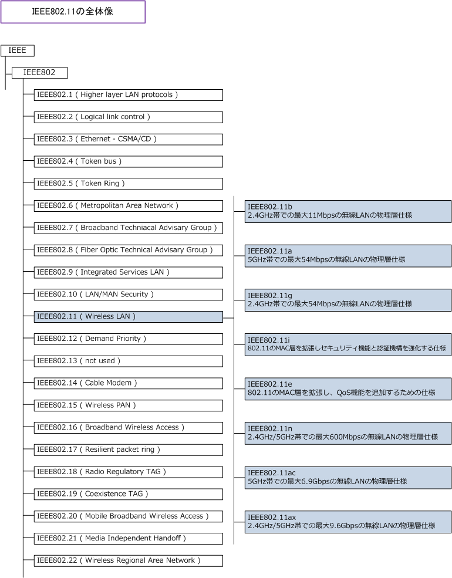

Wireless LAN
無線LAN（Wi-Fi）とは
無線LANはLANケーブルを必要としないイーサネットの通信技術です。無線LANの特徴は以下の通りです。
| 無線LAN（ Wi-Fi ）の特徴 | ||
|---|---|---|
| モバイル性の向上 | メリット | 電波の届く範囲での移動しながらの通信、機器の自由な配置変更が行える。 |
| LAN敷設の工事費削減 | メリット | LANケーブル、コネクタ、パッチパネルの部材や敷設工事費用が削減できる。 |
| 通信品質の問題 | デメリット | 無線LANと同じ周波数を使用する機器が近くにある場合、電波の干渉により 速度低下の可能性がある。また、電波の到達範囲によりスループットが異なる。 ※ IEEE802.11nが規格化された現在、通信品質の問題は大幅に改善されている。 |
| セキュリティの問題 | デメリット | 無線LANでは、電波にデータをのせて通信が行われる。その電波が不正に 傍受された場合、暗号化が不十分であるとデータを解読される可能性がある。 ※ 暗号化にAESを使用し、認証にIEEE802.1X認証を採用すれば問題がない。 |
無線LANのデメリットを解消するために、無線LANの規格化を行っている IEEE802.11Working Group は 様々な規格の標準化を進めています。現在では、11i、11e、11n、11acなどが標準化されたことによって 無線LAN特有の問題（ 特に通信品質とセキュリティ問題 ）はかなり解消されて普及に弾みがついています。 次に、有線LANと無線LANの違いを見てみましょう。注目すべきは、無線LANのレイヤ1が電波であること。

| 比較項目 | 有線LAN | 無線LAN |
|---|---|---|
| 標準規格 | IEEE802.3 | IEEE802.11 |
| 伝送媒体 | ケーブル | 電波 |
| アクセス制御 | CSMA/CD方式 | CSMA/CA方式 |
| LAN通信で使用するアドレス | MACアドレス | MACアドレス |
| PCで必要とするNIC | 有線LANカード ( PC内蔵が一般的 ) | 無線LANカード ( PC内蔵が一般的 ) |
| PCの接続先となる機器 | スイッチ ( リピータハブ、L2/L3スイッチなど ) |
アクセスポイント ( 無線LAN端末間を接続する電波中継機 ) |
※ 無線LANカードは別名として「 無線LANアダプタ、無線LANコネクタ、Wi-Fiアダプタ、Wi-Fiコネクタ 」と呼ばれています。
無線LANの通信方式
無線LANの通信方式には大きく2つのモードがあります。1つはアドホックモード（ad hoc mode）です。 アドホックモードではアクセスポイントを使用せず（介さず）に無線LAN機器同士が直接通信を行います。 このアドホックモードは IBSS ( Independent Basic Service Set ) とも呼ばれています。

もう1つはインフラストラクチャモード（infrastructure mode）。このインフラストラクチャモードでは アクセスポイントを使用して無線LAN機器同士が通信を行うモードです。企業内ネットワークにおいては インフラストラクチャモードによる無線LAN通信が一般的です。一方、アドホックモードの無線LAN通信は 無線LANカードを搭載したニンテンドーDSやPSPで対戦ゲームをする時によく使用されているモードです。
IEEE802.11の全体像
IEEEとは電気、電子分野における世界最大の学会。そしてIEEE802とはLAN規格を定めている委員会。 そして、IEEE802.11は無線LANに関する規格です。IEEE802.11はイーサネット（Ethernet）に関する 規格を定めたIEEE802.3と下表の通り並列の位置づけにあります。IEEE802.11の詳細は下表の通りです。

ネットワークエンジニアの設計・構築において、無線LANは問題が発生しやすい分野の1つと言えます。 有線LANの物理ケーブルによるデータ伝送とは異なり、目に見えない電波によるデータ伝送であることが その要因の1つと言えますが、それだけではなく無線LAN技術に関する知識不足によるところも起因して いることが多いように思えます。今回は、正しい理解と知識に重点をおいて解説していきたいと思います。